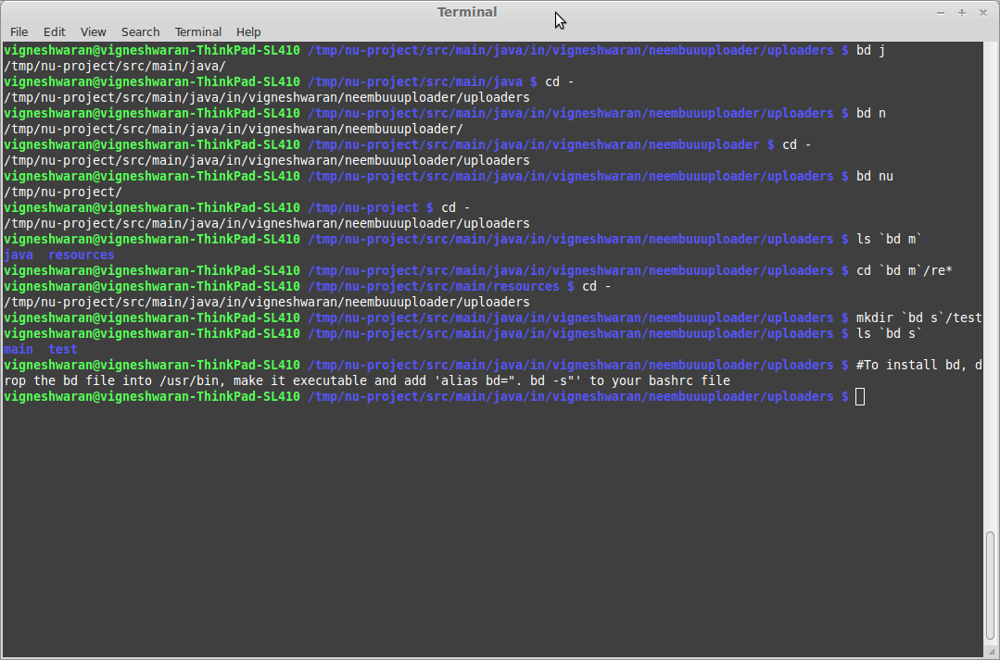

bd
Description: Quickly go back to a specific parent directory in linux instead of typing "cd ../../.." redundantly.
How to install:
wget -O /usr/bin/bd https://raw.github.com/vigneshwaranr/bd/master/bd
chmod +rx /usr/bin/bd
echo 'alias bd=". bd -s"' >> ~/.bashrc
source ~/.bashrc
# If you need autocomplete support, follow these two steps
wget -O /etc/bash_completion.d/bd https://raw.github.com/vigneshwaranr/bd/master/bash_completion.d/bd
source /etc/bash_completion.d/bd
To enable case-insensitive directory name matching, use -si instead of -s in the alias.
How to use:
If you are in this path /home/user/project/src/org/main/site/utils/file/reader/whatever
and you want to go to site directory quickly,
then just type:
bd site
In fact, You can simply type bd <starting few letters> like bd s or bd si
If there are more than one directories with same name up in the hierarchy, bd will take you to the closest. (Not considering the immediate parent.)
Other uses:
Using bd within backticks (`bd <letter(s)>`) prints out the path without changing the current directory.
You can take advantage of that by combining `bd <letter(s)>` with other commands such as ls, ln, echo, zip, tar etc..
Example:
If you just want to list the contents of a parent directory, without going there, then you can use:
ls `bd p`in the given example, it will list the contents of/home/user/project/If you want to execute a file somewhere in a parent directory,
`bd p`/build.shwill execute/home/user/project/build.shwhile not changing the current directory.If you reside in
/home/user/project/src/org/main/site/utils/file/reader/whateverand want to change to/home/user/project/test, then trycd `bd p`/test
Screenshot: 
Thanks:
See also:
- Tarrasch/zsh-bd - bd for zsh